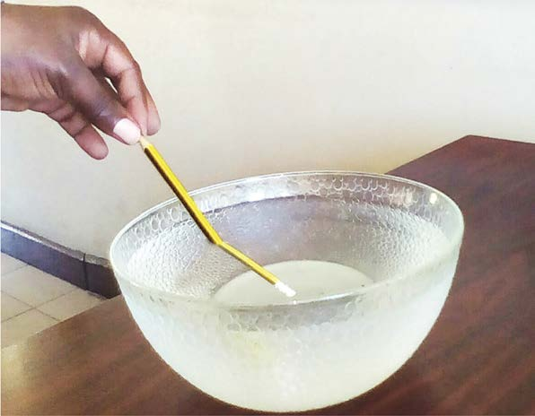
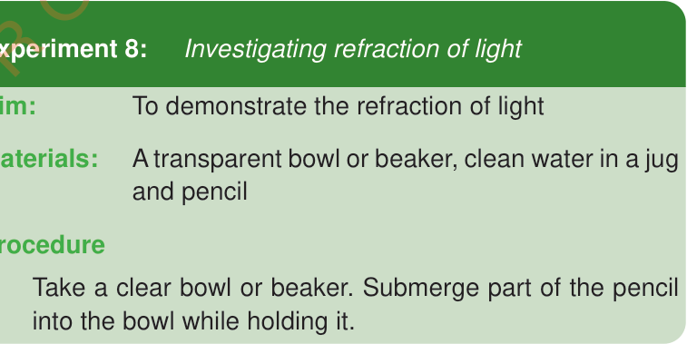

Refraction of light rays
Another property of light is the bending of light rays, which is referred to as refraction. Light rays bend when they move from one medium to another, such as from air to water. For example, when light passes from air into water, the rays bend. We do not see the light rays bending directly but rather observe the effects of this bending. Examine Figure 12, then proceed with the following experiment.
Figure 12: Effects of refraction of light


Experiment 8:
Investigating refraction of light
Aim:
To demonstrate the refraction of light
Materials:
A transparent bowl or beaker, clean water in a jug, a pencil and accessible application tools
Procedure
1.
Take a clear bowl or beaker. Submerge part of the pencil into the bowl while holding it.